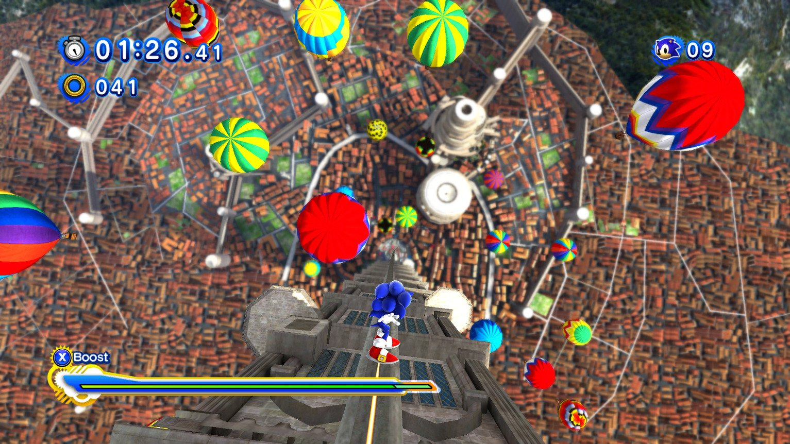
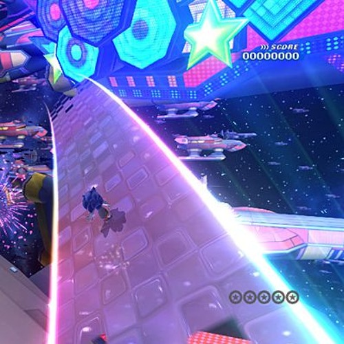

Sonic Colors Review: The Colors Feel So Right
The year of Sonic the Hedgehog's 30th anniversary is upon us, and with that comes new releases for the blue blur. This one is an especially big year for 3D Sonic, with the (allegedly) open-world Sonic Rangers on it's way, and the remaster of the Wii release of 2010's Sonic Colors.
I've always been rather mixed on Colors. I'd played it on and off over the years, but I never particularly sat down all the way through it. And yet, here I was, looking forward to the Ultimate re-release. I decided it'd be fun this year to look back at some 3D Sonic titles and see if my initial impressions of the game still hold up.
In this particular case, I simply wanted to see how I felt about Sonic Colors. Especially after playing Sonic Forces and Sonic Generations quite frequently over the past few years, does Sonic Colors still hold a chance?
Before we start
Now, since Sonic Colors Ultimate has yet to release, the only other version of the game that was available immediately was the original Wii release. I decided to play Sonic Colors on Dolphin. I upscaled the game to 1440p and enabled a 60 FPS hack. On top of this, I mapped the controls (Classic Controller) to mirror that more of Generations. Now that this sidenote is out of the way, here is my review of Sonic Colors!
The review
I think the first thing to mention going into Colors is...the controls. While they're okay - at least on the Classic Controller or GameCube controller - they are definitely different from Unleashed, Generations, and Forces. I sincerely hope that the re-release does change the control configuration to match that of the newer titles. Outside of that, they're fine, they just mess with muscle memory.
Let's start off with...the bad, and get that out of the way. The writing was bad and no amount of remaster can fix that. It wasn't *god awful* - I've seen worse - but it was very much lackluster and I can see why a lot of people genuinely despise it. I'll admit I laughed a few times, but for the most part the jokes did fall pretty flat. That being said, I think the light-hearted approach taken here *does* fit the game and overall fits Sonic, but even if the mood and tone were right, the actual writing was not up to the task. (However, it's worth noting that the Eggman intercom voice clips are genuinely some of the best writing in the franchise.) Outside of the writing, some levels were...questionably designed. A good few levels oftentimes feel like the same blocky platforming seen in later entries like Forces, but honestly, these levels were so short and so few and far between that I don't hate 'em too much. I think the shorter gimmicky levels outside of the bigger main-style levels was actually a really cool idea, but the dip in scale and quality of the shorter stages does sadly detract from the big ones. They can feel like filler sometimes, but personally I don't find them nearly intrusive enough to complain about them. They were fun little distractions and in some cases were just playgrounds to mess with Wisp powers, which was pretty neat. I found myself wanting to actually use them, which I can't say for the last few times I tried to enjoy this game.
Now, what was "average" about Sonic Colors? You know, nothing broken, nothing bad, but nothing notably exceptional either? It's a bit nitpicky, but I think for me just the way Sonic jumps in this game is the only real kinda "meh" thing about it. It feels light and floaty and slow, and lacks the "oomph" that makes his spinball *feel* good like in Generations and Unleashed. His double jump also feels pretty floaty, which is an interesting parallel to Forces and Lost World, where I'd argue his jump feels too heavy and his double jump doesn't jump *high* enough. On one hand, it's a very minor nitpick, but in a platformer, you will inevitably jump a lot, so it's important that it feels good to do. It does look like Ultimate has fixed this based on pre-release GIFs, and playing the game in 60 FPS seems to lessen the issue, but if you plan on playing the game on original Wii hardware, keep this in mind.
So, with the negativity out of the way...what was good about Sonic Colors?
Everything else.
The soundtrack, as usual for Sonic, is on another LEVEL. It fits each stage perfectly, and there's three variants of each level theme - it uses the same motif for every variant, but mixes them up to spice up the vibe. Notably, Sweet Mountain Act 2 and Aquarium Park Act 3 are both much better than the Act 1 they're variants of - in my own personal opinion anyway.
And this soundtrack lends itself to an absolutely gorgeous game. ven in 480p 30FPS on the Wii, it looked good, but simply upscaling it to 1440p with MSAA is enough to make this game absolutely SHINE. It's incredible how much detail and scale they were able to cram into a 2010 Wii game. Even with my ADHD which makes it *incredibly* hard to immerse myself in literally *any* game world, Colors had me absolutely enthralled with it's worlds. It was a gorgeous game accompanied by excellent music, and that really tied the atmospheric part of the game down. For an experience set in space, this is incredibly fitting, and lends itself to the rest of the journey - it's easily the most immersive Sonic game I've ever played.
As for the game's primary concept, the Wisps, these were *incredibly* well-done here. I realize nowadays most Sonic fans are tired of the Wisps, but I think in their debut game almost all of them were really fun to play with and use (with maybe the exception of the Hover Wisp). I found myself initially hating using Wisp powers (partly because I have very negative memories of using Wii Remote motion controls to activate them), but as I progressed later on into the game I genuinely was excited to see a Wisp capsule and play with it's power.
As for the level design, the stages were absolutely designed with this gimmick in mind and it shows - it makes them a blast to play through and they feel like a natural part of the gameplay as opposed to a tacked on power-up (looking at you, Sonic Lost World). At least speaking for the bigger, major acts, the design of the levels is superb. The shorter, Forces-like gimmick acts aren't anything to write home about, but the full-fledged stages felt like the best 3D Sonic I've yet to get my hands on. It's very much segmented into "going fast" and "platforming", but in a way that Unleashed and Generations couldn't, Colors often allows you to skip entire sections of the stage with the right movement. This is the strongest point of Colors, that shocked me till the very end.
Very few things are actually, fully scripted.
It might be easier to make a comparison to another fantastic Sonic game to fully grasp this idea.
In Rooftop Run: Act 2 of Sonic Generations, Sonic grinds down a rail after scaling the clock tower. Throughout this entire segment, the player cannot jump, boost, or even flip directions on the rail. This is a 100% scripted segment, and it leaves the player completely without control of Sonic.
However, in Colors, in similar situations, the player has control. For example, on Starlight Carnival's automated sky-roads, the player can still opt to use the boost. While this is not 100% full control of Sonic, and it's still mostly scripted, it does allow the player some control - and, the boost does actually speed up the player, accelerating the pace of the segment!
And this echoes throughout the rest of the game. In Sonic Colors, the player is never truly out of control. You can, in some way, influence the game at any moment, and that is AWESOME. In boss battles in Generations or Forces, when you boost, oftentimes the boss will move back or adjust it's speed to match Sonic, preventing you from attacking it. This does not happen in Colors. In fact, there's an entire mini-boss fight based upon this concept! In Aquarium Park, there's a robot crab that changes attack patterns based on whether Sonic can out-run it with boost or not. If it senses you're close, it'll go for a melee attack, but if it thinks you're too far away it'll fire lasers at you instead. It's a small thing, but it's this attention to detail that really stuck out to me in Sonic Colors. It very rarely felt like the game was playing itself - which many Sonic fans will tell you is a big issue with modern Boost Sonic. Whereas in most Sonic games, a speed ramp would simply launch you into a spring with no input required, in Colors (i.e. Asteroid Coaster), it'll fling you into space - and it won't automatically snap you to a path. It requires you, the player, to say, "oh let me homing attack this spring" instead of just snapping you to it with a fancy camera pan. It's very minor, but it feels like a world of difference.
Sonic Colors may not be the same spectacle of speed that Unleashed and Generations perfected. But it excels in making the stages feel actually open and like real places, instead of simply really pretty obstacle courses. As I said earlier, if you can find a way around an obstacle - be it by Wisp, by Boost, whatever - Sonic Colors will usually permit it. If you want to jump over half of the level and fly with an Air Boost, go ahead! The game's not going to stop you. Colors allows you, the player, to take risks - you'll probably die a good few times doing this, but very rarely are parts of the level actually 100% walled-off. It feels very freeing, especially compared to Gens and Unleashed which trigger death planes if you go too far out. And it's this design approach that works so well with the space theme and atmosphere of Colors. You, Sonic, are in space - limitless, vast, free. You get to explore and run around the way *you* want to. While this may lead to levels and physics less finely-tuned than Gens/SU, it leads to Colors having it's own identity within the "boost trilogy". It's a very refreshing take on Modern Boost Sonic, especially after whatever Forces did.
Sonic Colors is a great game, and I think in retrospect did deserve the praise it got. I am really looking forward to Sonic Colors Ultimate, and hope it fixes the controls. Other than that, whether it's on the Wii, Dolphin, or the upcoming remaster, I think that everyone should at least give Colors a try. It's a piece of 3D platformer bliss that even with the limitations at the time still managed to blow me away in 2021. Overall, a great experience, and I can't wait to pay a second visit to Eggman's Interstellar Amusement Park in September.
Thanks for reading! This review originally appeared as a tweet thread, so if formatting seems strange...that's probably why. I have more Sonic reviews for this year in the works, so I hope you'll look forward to them!
Ruby out.